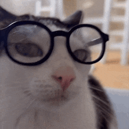

👋 Bem-vindo,
🧭 este site é navegável por teclado

😺 Não seja tímido, pode testar!
🔍 Navegação por teclado tem muitas vantagens, sabia?
- ✔️ Acessível para todos
- ✔️ Mais rápido para quem domina
- ✔️ Não precisa de mouse
- ✔️ Ideal para pessoas com deficiência
- ✔️ Funciona em qualquer dispositivo
💡 Sabe por que é importante testar com modais também?

📕 Agora vem, vou te ensinar como resolver


🔮 Como a Mágica é feita:
Dicas para deixar seu projeto acessível por teclado
-
1. Use elementos focáveis
Prefira<button>,<a href>,<input>
Evite usar<div>ou<span>como botões. -
2. Ordem do Tab deve ser lógica
Navegação precisa seguir a ordem visual da página.
Evite usartabindexmanual demais. -
3. Não prenda o foco
Ao abrir modais, mantenha o foco dentro e permita fechar com Esc. -
4. Use HTML semântico
Estruture com<form>,<nav>,<section>etc.
Evite usar<div>pra tudo. -
5. Dê suporte ao teclado
Elementos comonclickprecisam responder aEntereEspaçotambém. -
6. Teste de verdade!
Use: Tab, Shift+Tab, Enter, Esc
✅ Você consegue navegar, ativar, fechar e sair de tudo?